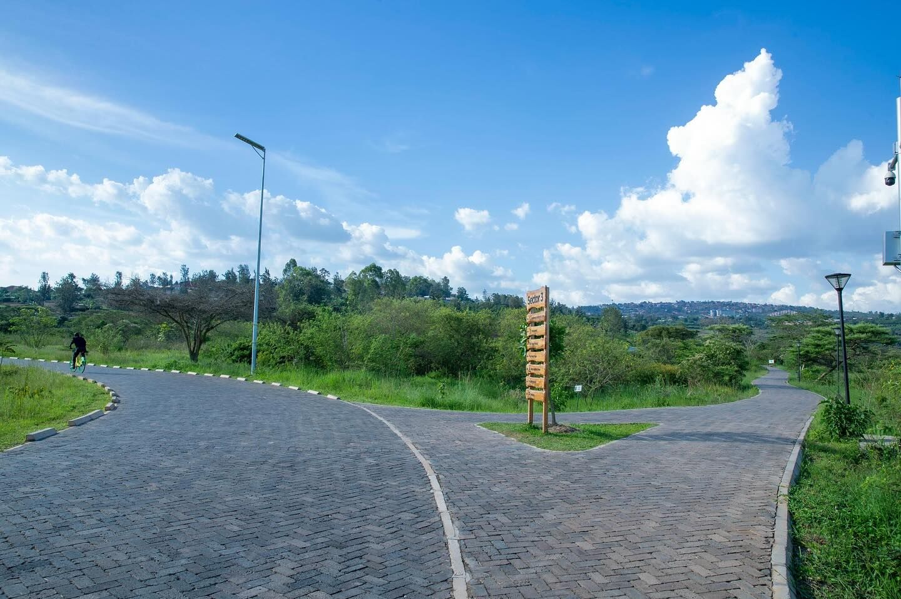

📍 Nyandungu Eco-Park
Nyandungu Eco-Park is one of the most beautiful green spaces in Kigali. It was created to restore wetlands and provide a peaceful place where people can enjoy nature.

Nyandungu Eco-Park is one of the most beautiful green spaces in Kigali. It was created to restore wetlands and provide a peaceful place where people can enjoy nature.
Nyandungu Eco-Park is perfect if you want to escape the busy city and relax in nature.
Step inside the studio walls of Kigali's most electric creative space — where paint speaks louder than words.